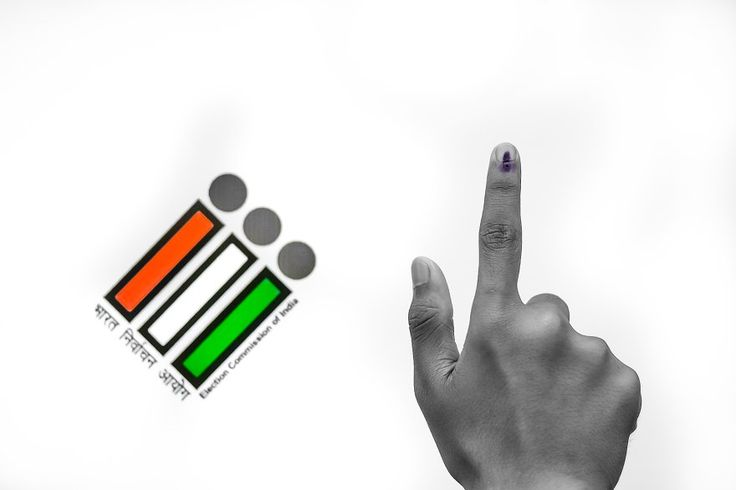
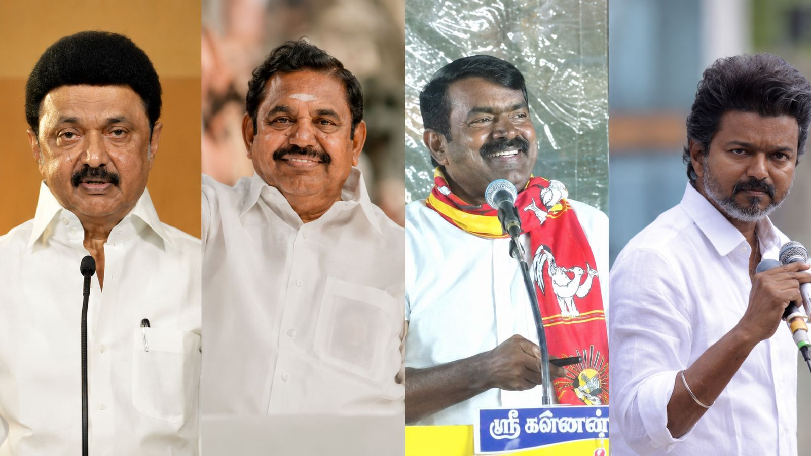
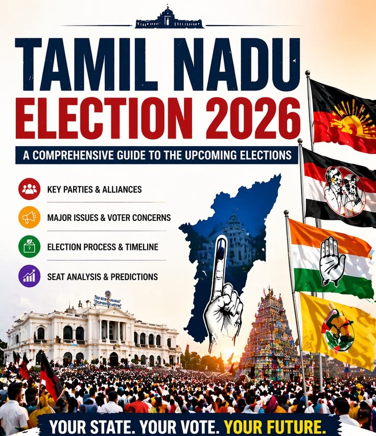

TN RESULT-2026
The TVK contested alone in 233 constituencies.[a] It positione d itself as a rival to the oscillating duopoly of the Dravida Mu nnetra Kazhagam (DMK) and the All India Anna Dravida Munnetra Ka zhagam (AIADMK), and an ideological opponent of the Bharatiya Janata Party, the ruling party of the Government of India. The incumbent DMK led the Secular Progressive Alliance (SPA), which was part of the Indian National Developmental Inclusive Alliance led by the Lok Sabha opposition, the Indian National Congress (INC); the SPA swept all the 39 seats in the state in the 2024 Lok Sabha election. The opposition AIADMK was part of the BJP's National Democratic Alliance (NDA). Opinion poll agencies projected a second consecutive term for the DMK or a return to power for the AIADMK. In an upset result, the TVK emerged as the single largest party above the DMK and AIADMK, amassing 108 seats but short of majority (118). The SPA was reduced to 73 seats, with the DMK securing 59 and the INC five. The NDA won 53 seats, with the AIADMK securing 47 and the BJP only one. This created Tamil Nadu's first hung assembly. The AIADMK lost its official opposition status to the DMK.

ABOUT THE ELECTION
This election marked the first time a non-Dravidian party emerged as the largest party in the assembly since the 1960s, breaking a tradition of power alternating between the DMK and the AIADMK.[b] The outgoing Chief Minister of Tamil Nadu, M. K. Stalin of the DMK, lost his election from the Kolathur constituency where he had previously won thrice consecutively.[c] The TVK's chief-ministerial candidate Vijay won both the Perambur and Tiruchirappalli East constituencies he contested in.[d] The AIADMK's former Chief Minister, Edappadi K. Palaniswami, retained Edappadi with the widest winning margin in the state.[e] On 5 May 2026, Stalin resigned as Chief Minister. The next few days, Vijay met the Governor of Tamil Nadu, Rajendra Arlekar, multiple times to stake claim to the formation of the new government, resulting in tensions and uncertainty. Vijay pursued a majority by inviting SPA parties other than DMK to render their support; INC left the SPA and joined the TVK government, while four other SPA parties extended their support to a TVK-led coalition government without leaving the alliance.[f] Upon confirming a majority to Arlekar, Vijay was sworn in as Chief Minister on 10 May 2026. His government passed the floor test on 13 May.

PARTIES
- Tamilaga Vettri Kazhagam (TVK)
- Dravida Munnetra Kazhagam (DMK)
- All India Anna Dravida Munnetra Kazhagam (ADMK)
- Indian National Congress (INC)
- seatsPattali Makkal Katchi (PMK)
- Communist Party of India (CPI)
- Communist Party of India (Marxist) (CPI(M)
- Viduthalai Chiruthaigal Katchi (VCK)
- seatsIndian Union Muslim League (IUML)
- Bharatiya Janata Party (BJP)
- Desiya Murpokku Dravida Kazhagam (DMDK)
- seatAmma Makkal Munnettra Kazagam (AMMKMNKZ)

RESULT
In an upset result, the TVK emerged as the single largest party above the DMK and AIADMK, amassing 108 seats but short of majority (118). The SPA was reduced to 73 seats, with the DMK securing 59 and the INC five. The NDA won 53 seats, with the AIADMK securing 47 and the BJP only one see more result